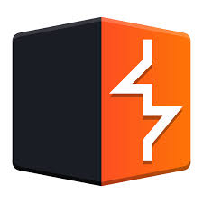
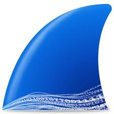
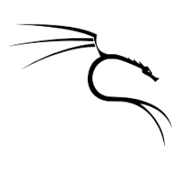
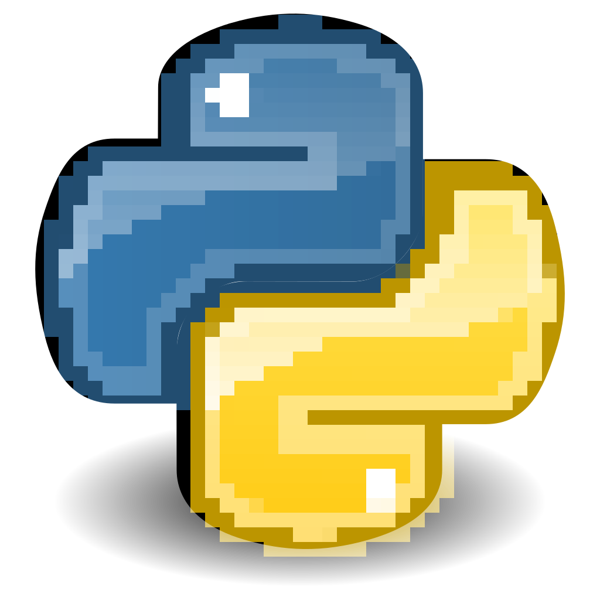
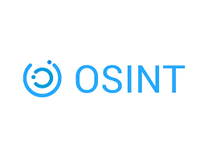

About Me
The name is Adarsh, a cybersec genesis (which i consider myself :) who's into the world of ethical hacking, digital forensics, and understanding how systems tick — and how to break and secure them. From exploring vulnerabilities in web applications to analyzing malware behavior, I just love to uncover the details others might miss
Over the past few years of my life, I've gained hands-on experience through internships and personal projects, diving into penetration testing, threat hunting, and even drone forensics (came as a surpise to me also Drone,out of all the things out there) I enjoy combining the technical curiosity of mine with real-world problem-solving, actively looking for smarter, more secure ways to approach challenges.
Currently exploring the endless possiblities of AI and Cybersecurity, I'm constantly trying out the new tools, learning about the emerging threats, and sometimes building tools of my own {trying :( }. I believe that cybersecurity isn't just about defense — it's about creativity, adaptability, and staying one step ahead .Looking for the possibilities in AI, breaking (and fixing) code, and occasionally reminding myself that rushing isn't always the answer - in both programming and cybersecurity.
Education
Yenepoya Institute of Arts Science & Commerce, Mangalore
BSc, Computer Science in Cyber forensic Data analtyics and Cybersecurity
2023 - 2025
Mar Gregorious Memorial School, Trivandrum, Kerala
Higher Secondary, Biology Science
2020 - 2022
Experience
Position - Intern
Cyber Police Station, Trivandrum
Dec 2023 - Jan 2024
Investigated real-world cybercrime cases, analyzed attack vectors, and contributed to digital evidence collection and malware triage.
- Conducted forensic artifact analysis Speacialed tools.
- Helped track the digital footprints in real cybercrime investigations
- Learned about real-world cybersecurity incident handling
Projects
SIEM Security Platform
Developed and implemented a security monitoring solution using Wazuh and ELK Stack
Containerized the application using Docker for easy deployment
Created an intuitive dashboard for real-time threat monitoring and log analysis
Website Security Extension (Chrome)
Integrated Google Safe Browsing API to develop a real-time website safety analyzer
Enhanced web browsing security through proactive threat detection
Practiced secure coding principles and API integration

Credential Leak Detection System
Built a credential leak detection system using Python and Hugging Face Transformers
Implemented pattern recognition for sensitive data identification
Demonstrated practical application of AI in cybersecurity
Skills
 C
C-  Burpsuite
-  Wireshark
-  Kali Linux
- Bash
-  Python
 Wazuh
Wazuh-  OSINT
 JavaScript
JavaScript HTML
HTML CSS
CSS React
React Node.js
Node.js MongoDB
MongoDB
Certifications
Certified Penetration Tester (CPT) - RedTeam
Advanced web application and network penetration testing, vulnerability management, wireless security, Docker security, thick-client pen testing, and cloud security.
Cyber Security Analyst - IBM (Coursera)
Hands-on expertise in tools like SIEM, endpoint protection, incident response, and penetration testing.
Many more coursera certificates associated with cybersecurity, AI, and programming